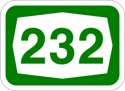
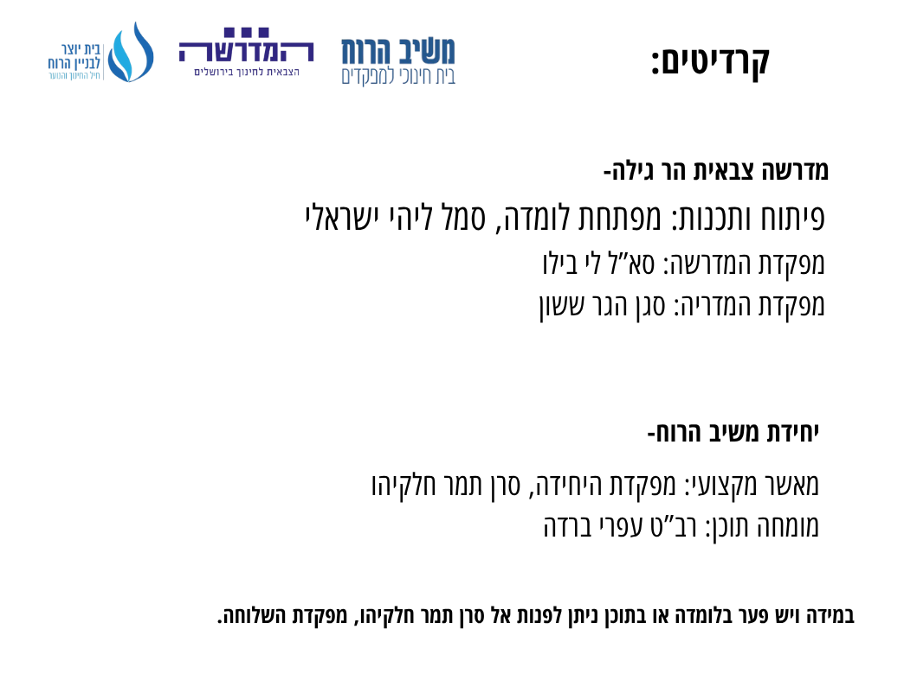

אם פתחת את הלומדה ממסך של טאבלט או מחשב, אנא עבור אל מסך הנייד הקרוב אליך
סיור דיגיטלי בציר

סיור דיגיטלי זה פותח על מנת להנציח את אירועי ה7 באוקטובר שהתרחשו על ציר 232 (ציר הדמים),
כיום אין סממנים מובהקים בכביש לזוועות.
מוזמנים במהלך הנסיעה על ציר זה ללמוד אודות סיפורו.
לומדה זו מכילה תכנים קשים
(תמונות ועדויות מהשבעה באוקטובר)
עדות מכביש 232
